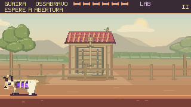
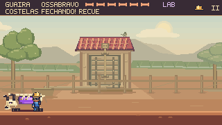
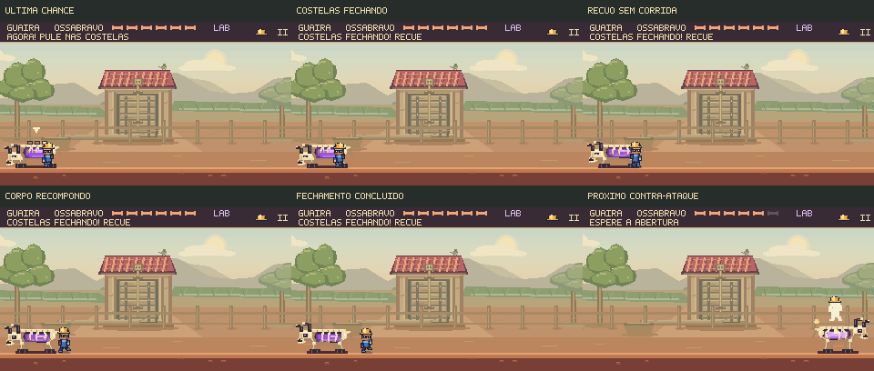
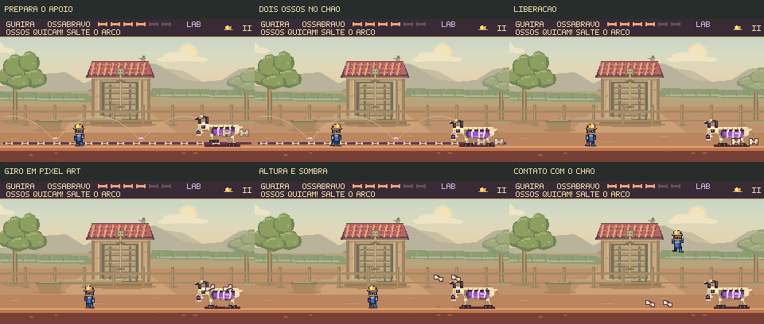

Errar uma abertura também faz parte da luta.
Ossabravo fecha as costelas, recupera o apoio e prepara a próxima investida. Feka pode reconhecer esse intervalo e recuar. Os ossos ganharam uma origem visível no corpo, articulações recortadas, giro e contato com o chão.
Uma oportunidade perdida, uma nova tentativa
Percurso de 6,5 s, a 60 fps, com os controles e a física do jogo, sem áudio. Nenhum dano em Feka; o primeiro acerto acontece na abertura seguinte. Este trecho demonstra a recuperação de uma oportunidade perdida.
Fechamento visível. O descanso que já existia dura 0,4 s. Agora ele contém quatro poses: as costelas se fecham, o crânio se ergue e as patas retomam o apoio. O aviso “COSTELAS FECHANDO! RECUE” acompanha o movimento.
Uma regra consistente. Nesse intervalo, o corpo permite a saída de Feka. As costelas já não aceitam dano, e um salto tardio rebate na armadura. Quando a preparação seguinte começa, o corpo volta a ser perigoso e o ataque recebe seu aviso completo.
O mesmo comando, no mesmo instante



Os ossos se soltam, giram e encontram o chão

Uma ação com começo e peso. Ossabravo levanta as patas dianteiras e comprime o corpo ao soltar as peças. Os ossos têm quatro orientações desenhadas na grade de pixels, contorno nas articulações e luz no núcleo.
Altura e aterrissagem legíveis. A sombra diminui quando o osso sobe. A poeira nasce no ponto em que ele toca o chão. Pausar congela todos esses detalhes; movimento reduzido mantém a trajetória física e remove o giro e a poeira.
As trajetórias, a quantidade de projéteis e as durações dos avisos permanecem as mesmas desta etapa de desenvolvimento. A revisão concentra-se na leitura dos ataques e na transição entre uma chance perdida e a próxima.
Ver uma partida completa com os novos movimentos
21,12 s, seis acertos e nenhuma perda de capacete. A rota alternativa com sentada também foi conferida no jogo.
Ver o problema anterior com os mesmos comandos
Registro de 4,98 s, capturado antes da alteração. A comparação usa os mesmos comandos até o final deste trecho.
Conferência
O recuo foi verificado para os dois lados, inclusive com a aceleração da caminhada comum. As rotas de salto, sentada e recuperação foram conferidas com teclado e toque simulado. A pausa foi examinada durante o fechamento, o quique, o retorno e a queda.
Os percursos demonstram que as respostas funcionam com a física nativa. A descoberta das estratégias e o equilíbrio da dificuldade ainda precisam ser avaliados com jogadores novos.
Resultados e arquivos · Controles e pausa no navegador · Reprodução e critérios